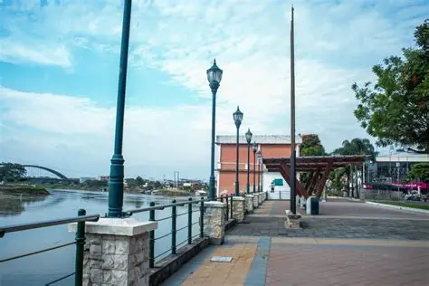
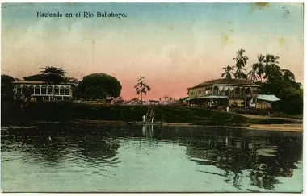
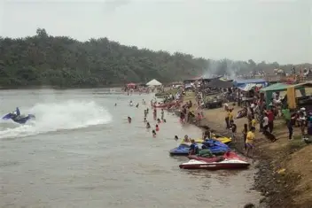
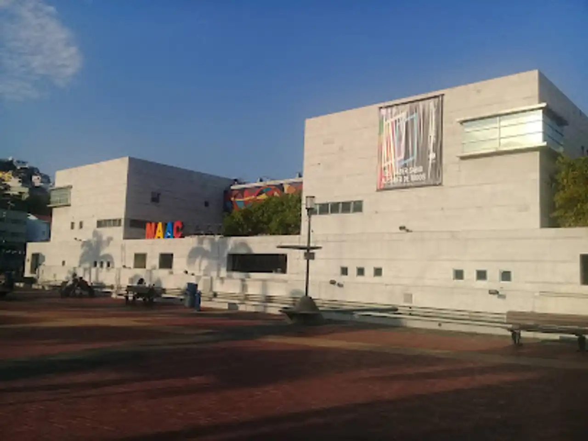
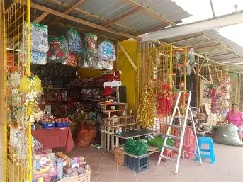

Descubre los Sitios Turísticos de Babahoyo
Babahoyo ofrece una rica variedad de lugares encantadores para disfrutar, desde espacios naturales hasta íconos culturales.
Los visitantes pueden sumergirse en la historia montuvia, apreciar la gastronomía costeña y disfrutar de celebraciones
que reflejan la identidad local.
🌅 Lugares destacados
- Malecón 9 de Octubre: Ideal para paseos y actividades culturales.
- Hacienda Puebloviejo: Sitio tradicional que conserva arquitectura montuvia.
- Balneario El Salto: Lugar natural frecuentado para relajación y encuentros familiares.
- Parque Central: Espacio cívico con monumentos y jardines.
- Museo de la Ciudad: Exhibe piezas sobre historia babahoyense.
📸 Galería turística
|  |
 |
 |
 |
 |
 |
🎉 Actividades recomendadas
- Pasear en bicicleta por el malecón durante el atardecer.
- Visitar ferias artesanales para encontrar productos típicos como sombreros de paja y dulces montuvios.
- Tomar fotos con murales folclóricos en zonas céntricas.
- Explorar senderos cerca del río para avistamiento de aves.
- Participar en fiestas cívicas con danzas y concursos tradicionales.